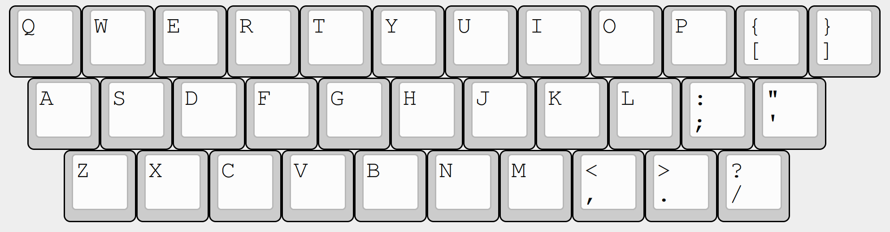
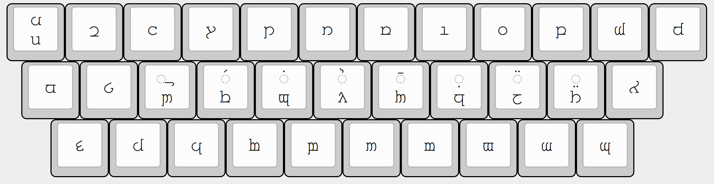
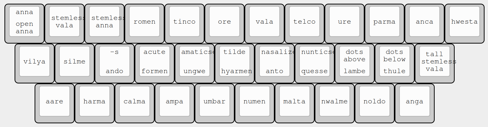
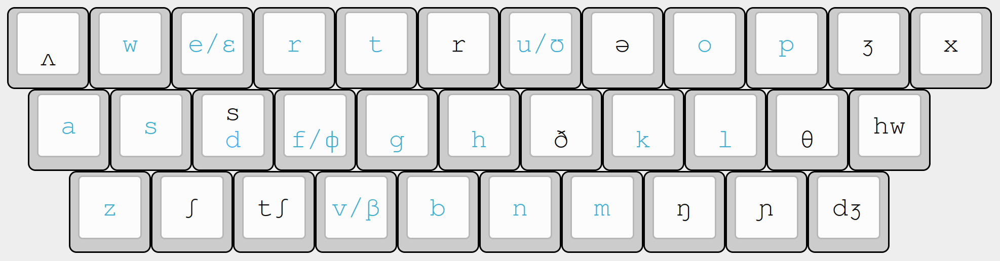

I've been looking for a keyboard to type Tengwar. Matt3o's keycaps are great (I've been using Granite for years), and he has an Elven kit based on Dan Smith's font. However, that font takes no account for phonetics (Matt3o explains why), and the tengwa are simply arranged in logical order, analagous to a keyboard in alphabetical order. Since I knew I was going to be using the Quenya Alphabet (English) mode of Tengwar, not Sindarin, and since I don't plan to use Dan Smith's font but instead will use the ConScript Unicode proposal, I decided to create a phonetic layout as similar as possible to QUERTY. This would ease the switch between Roman and Tengwar.
The basic layout uses only those keys common to both ANSI and ISO keyboards: the 26 letter keys plus 7 symbol keys on a ANSI QWERTY. 
The layout is as follows. Most keys represent one tengwa. Shift is used on the home row to type diacritics. Anna can also only be typed using shift since it's not normally used: instead, a key is dedicated to Open Anna, used as the vowel in "but". For reference the layout is also included below with the tengwa names rather than a rendering of the tengwa. FreeMonoTengwar is used here to render the tengwa.  
The idea here is to try to map closely to QUERTY. Therefore, all tengwa that have an IPA representation that matches a Roman letter (colored blue in the layout below) are placed on that key, which allocates most tengwa. For the remaining vowel tengwa, the schwa Telco is placed on 'i', being the most similar, and the 'q' is used for Open Anna. The '-s' suffix is placed as a shifted 'd' next to 's', on the home row where it's easily reachable. Unassigned consonants are then distributed over the remaining free keys:

The following tengwa are not represented because they're not needed: Unque, Arda, Alda, Silme Nuquerna, Aare Nuquerna, Hwesta Sinarinwa, Yanta, Ara, and Halla. The extended tengwa are also not represented despite being used in the alphabet because they can be replaced with combinations of other characters. The ligating short carrier is also not represented although maybe it should be, could be placed as a shifted 'i'.
A partial keymap.c for YMDK's YD60MQ, ISO layout with split space and 1U shifts, can be found here: keymap.c. It uses QMK's Unicode Map mode of unicode input to type the ConScript Unicode codes directly.
Written in Vim using markdown.css, google-code-prettify and MathJax.